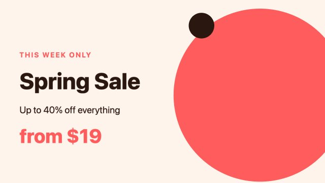
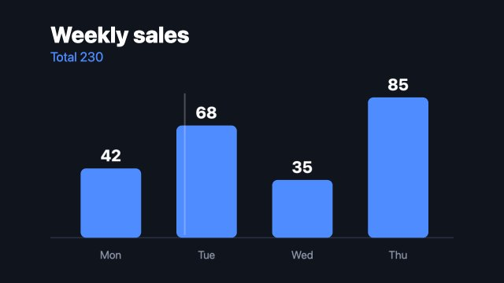
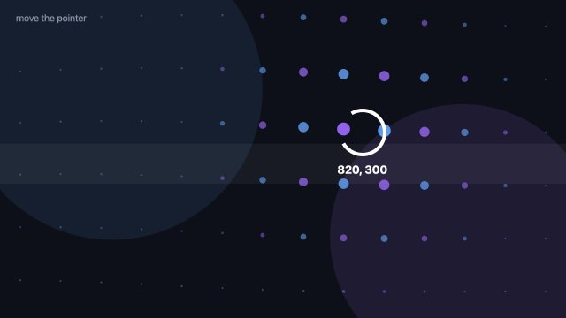
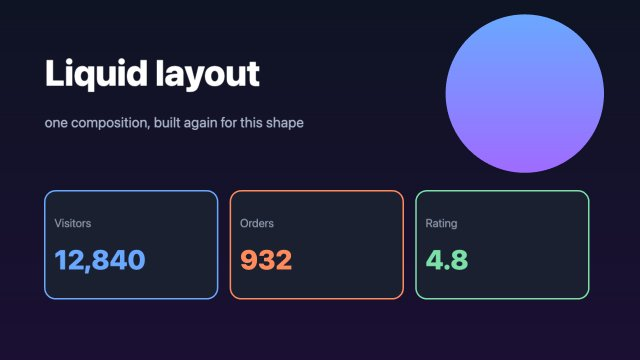
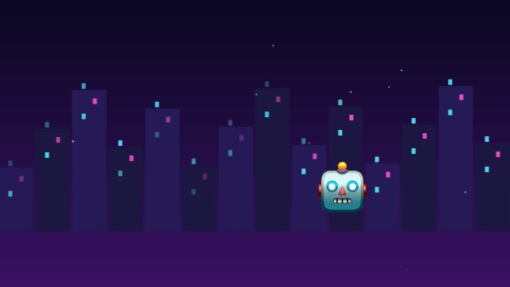

Interactive movies
A movie you can change while it plays
Declare a few variables, read them from the film, and change them from the page: a language, a colour, a slider, the pointer, a roll of the dice. The film is built again at the same frame and the sound is kept when it did not change. It is still a movie: the same file renders to MP4 with the values you choose (pixi-effects render film.html --var lang=ja).
 Rock paper scissorsA different throw every time. Seek back before “SHOOT!” and the CPU throws again; seek anywhere after it and the ending is the same. The whole film is data and two numbers.
Rock paper scissorsA different throw every time. Seek back before “SHOOT!” and the CPU throws again; seek anywhere after it and the ending is the same. The whole film is data and two numbers.
One film, many variantsLanguage, brand colours and format (wide, tall, square) switched live. The sound is mixed once and reused. The same file renders any variant with--var.
Numbers and words from a formFour sliders, a text box and a colour picker drive a bar chart while it plays. Many changes are joined into few rebuilds.
The pointer as a variableTwo numbers, 84 dots and a ring. The film keeps playing and never loses its place while it is rebuilt on every move.
A layout that follows the windowDrag the window edge: a wide layout becomes a tall one. Written inWandH, rebuilt from aResizeObserver. Scroll through a cityThe page’s scroll position is one variable: the camera flies down a 2.5D street while day turns to night, and every window lights up in turn.
Scroll through a cityThe page’s scroll position is one variable: the camera flies down a 2.5D street while day turns to night, and every window lights up in turn. Write a tune with four chordsThe music is text, so a chord is a variable. Pick four chords and the tune is made again; the colours and the cards follow.
Write a tune with four chordsThe music is text, so a chord is a variable. Pick four chords and the tune is made again; the colours and the cards follow. A card for anyoneType a name and the card changes. One button then makes an MP4 for every name in a list, right in the browser.
A card for anyoneType a name and the card changes. One button then makes an MP4 for every name in a list, right in the browser.
Choose your endingThe film stops at a fork. Pick a path and the second half changes; go back and pick again. Each ending can be rendered alone.
How it works: the guide chapter · API. Run these pages from a local copy with a static server; they load ../../dist (npm run build first).